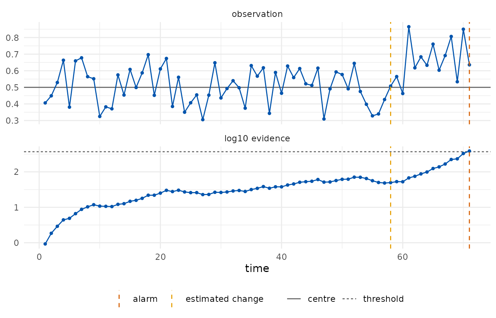
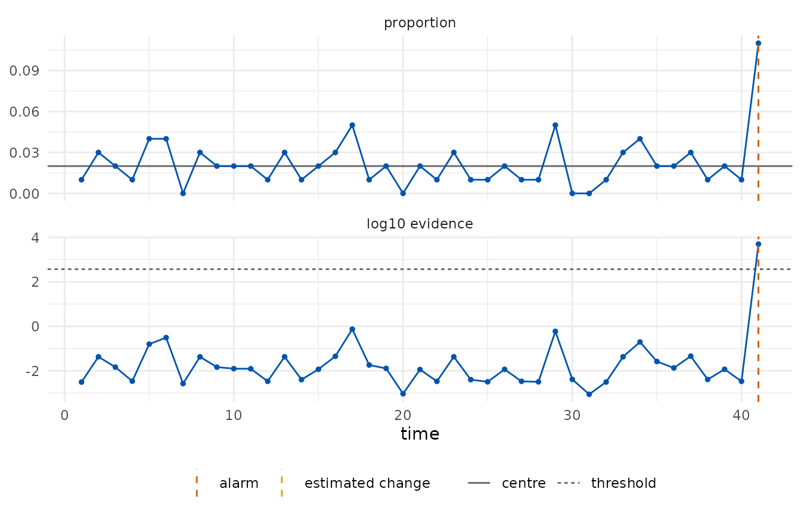

What an e-detector is
A control chart watches a stream of observations and raises an alarm when the process seems to have changed. The classical charts (Shewhart, CUSUM, EWMA) are calibrated under a model for the in-control process, usually Gaussian, and their false-alarm rate is only as good as that model.
An e-detector (Shin, Ramdas and Rinaldo, 2024) replaces the model by a class: everything the user is willing to assume about the process before the change, for example “observations lie in [0, 1] and their mean is at most 0.5”. For every distribution in the class, the expected time to a false alarm is at least the target average run length (ARL). The detector accumulates e-values, bets against the pre-change class, started at every time point; the Shiryaev–Roberts type sums them, the CUSUM type keeps the largest, and the alarm is raised when the accumulated evidence reaches the ARL.
The price of the guarantee is paid in detection delay: the detector cannot know the size of the change, so it bets on a mixture of shifts.
A bounded stream
A loss in [0, 1] whose mean should stay at 0.5. After 60 observations the mean rises to 0.7.
set.seed(1)
x <- c(runif(60, 0.3, 0.7), runif(60, 0.5, 0.9))
chart <- edetect_x(x, bounds = c(0, 1), center = 0.5, arl = 370, direction = "up")
#> Warning: Alarm at t = 71; 49 later observations were not consumed.
chart
#>
#> ── e-detector chart ────────────────────────────────────────────────────────────
#> "bounded" class, centre 0.5 (declared), direction "up", type "sr", target ARL
#> 370
#> ✖ Alarm at t = 71 (evidence 387 >= 370); estimated change at t = 58.
edetect_alarm(chart)
#> # A tibble: 1 × 6
#> alarm alarm_time evidence threshold change_estimate n_observed
#> <lgl> <int> <dbl> <dbl> <int> <int>
#> 1 TRUE 71 387. 370 58 71
autoplot(chart)
The detector stopped at the alarm; the observations after it were not
consumed and a warning said so. edetect_report() lists what
was assumed, how the detector was built and what happened, and
tidy() returns the trajectory.
edetect_report(chart)
#>
#> ── e-detector report ───────────────────────────────────────────────────────────
#> Class "bounded", centre 0.5 (declared); direction "up"; type "sr"; target ARL
#> 370.
#> Observations: 71. Maximum evidence 387 against a threshold of 370.
#> ✖ Alarm at t = 71 (evidence 387); estimated change at t = 58.
#>
#> ── Assumptions ──
#>
#> • Pre-change observations lie in [0, 1] with mean at most 0.5 (nothing else
#> assumed).
#> • The centre was declared by the user.
#> • Observations arrive in time order and none was dropped or imputed.
#> edetect 0.0.0.9000, R version 4.6.1 (2026-06-24)
head(tidy(chart))
#> # A tibble: 6 × 9
#> t x n log_evalue evidence evidence_cusum threshold change_estimate
#> <int> <dbl> <dbl> <dbl> <dbl> <dbl> <dbl> <int>
#> 1 1 0.406 1 -0.0780 0.925 0.925 370 1
#> 2 2 0.449 1 -0.0418 1.85 0.959 370 2
#> 3 3 0.529 1 0.0230 2.91 1.02 370 3
#> 4 4 0.663 1 0.123 4.42 1.16 370 3
#> 5 5 0.381 1 -0.100 4.88 1.04 370 3
#> 6 6 0.659 1 0.120 6.62 1.17 370 3
#> # ℹ 1 more variable: alarm <lgl>Phase I and Phase II
The centre is usually not known but estimated from in-control data.
Supplying phase1 sets it and records the source as an
assumption of the chart.
design <- edetect_design(arl = 370, class = "bounded", bounds = c(0, 1),
phase1 = runif(100, 0.3, 0.7), direction = "both")
design
#>
#> ── e-detector design ───────────────────────────────────────────────────────────
#> Pre-change class: "bounded"; centre 0.5095 (phase1, n = 100)
#> Bounds: [0, 1]; e-values: "betting"
#> Direction: "both"; type: "sr"; target ARL 370 (threshold 370 on the e-detector
#> scale)
#> Mixture over 14 shifts: 0.0245, 0.0491, 0.0981, 0.172, 0.245, 0.343, 0.441,
#> -0.0255, -0.0509, -0.102, -0.178, -0.255, -0.357, -0.459Attribute charts
A p chart monitors the proportion of nonconforming units in subgroups
of size n; a c chart counts nonconformities per unit; a u
chart counts them per unit of exposure. The pre-change class for p is
“each trial has success probability at most the centre” (dependence
within a subgroup is allowed); for c and u it is “counts are sub-Poisson
with the declared rate”, which excludes overdispersion.
set.seed(2)
defects <- c(rbinom(40, 100, 0.02), rbinom(30, 100, 0.06))
p_chart <- edetect_p(defects, n = 100, center = 0.02, arl = 370)
#> Warning: Alarm at t = 41; 29 later observations were not consumed.
edetect_alarm(p_chart)
#> # A tibble: 1 × 6
#> alarm alarm_time evidence threshold change_estimate n_observed
#> <lgl> <int> <dbl> <dbl> <int> <int>
#> 1 TRUE 41 4980. 370 41 41
autoplot(p_chart)
With the daily COVID-19 deaths of Recife from the
shewhartr package, a c chart with the first four weeks as
Phase I asks when the count left its early level.
deaths <- shewhartr::cvd_recife$new_deaths
c_chart <- edetect_c(deaths[-(1:28)], phase1 = deaths[1:28], arl = 370, direction = "up")
#> Warning: Alarm at t = 2; 249 later observations were not consumed.
edetect_alarm(c_chart)
#> # A tibble: 1 × 6
#> alarm alarm_time evidence threshold change_estimate n_observed
#> <lgl> <int> <dbl> <dbl> <int> <int>
#> 1 TRUE 2 29217. 370 1 2Regression chart
When the in-control level depends on covariates, a Phase I model is fitted and the Phase II residuals are monitored as a sub-Gaussian stream centred at zero with the residual scale of the fit.
set.seed(3)
d1 <- data.frame(load = 1:80); d1$time <- 10 + 0.4 * d1$load + rnorm(80, sd = 1)
d2 <- data.frame(load = 81:140); d2$time <- 10 + 0.4 * d2$load + rnorm(60, sd = 1) + c(rep(0, 30), rep(2.5, 30))
r_chart <- edetect_regression(time ~ load, phase1 = d1, phase2 = d2, arl = 370, direction = "up")
#> Warning: Alarm at t = 34; 26 later observations were not consumed.
edetect_alarm(r_chart)
#> # A tibble: 1 × 6
#> alarm alarm_time evidence threshold change_estimate n_observed
#> <lgl> <int> <dbl> <dbl> <int> <int>
#> 1 TRUE 34 148698. 370 31 34Checking the guarantee and the delay
edetect_arl() simulates run lengths of a design: without
a change it estimates the ARL (which must be at least the target), with
a change it estimates the detection delay.
design <- edetect_design(arl = 100, class = "subgaussian", center = 0, sigma = 1, direction = "up")
set.seed(4)
edetect_arl(design, pre = function(n) rnorm(n), n_rep = 100, max_t = 3000)$summary
#> # A tibble: 1 × 6
#> arl_estimate se censored target_arl n_rep max_t
#> <dbl> <dbl> <dbl> <dbl> <int> <int>
#> 1 168. 14.0 0 100 100 3000
edetect_arl(design, pre = function(n) rnorm(n), post = function(n) rnorm(n, 1),
change_at = 50, n_rep = 100, max_t = 500)$summary
#> # A tibble: 1 × 7
#> delay_mean se false_alarm censored change_at n_rep max_t
#> <dbl> <dbl> <dbl> <dbl> <int> <int> <int>
#> 1 6.70 0.446 0.12 0 50 100 500